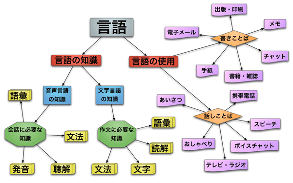

作文に必要な知識

日本語は、話しことば（音声言語）と書きことば（文字言語）の違いが大きい。
在日語中說話方式(聲音言語)及寫的方式(文字言語)的差別非常大。
「音声言語の知識」の中で、実用的なものは『会話に必要な知識』である。「文字言語の知識」の中で、実用的なものは『作文に必要な知識』である。
「聲音言語的知識中」實用性的東西是要有『會話時所必要的知識』。「文字言語的知識中」實用的則是要有『作文所必要的知識』。
日本語では、『会話に必要な知識』と『作文に必要な知識』にも大きな違いがある。たとえば、作文に使われる語彙と会話に使われる語彙には違いがあり、作文で使われる文法と会話で使われる文法にも違いがある。
在日語中『會話時所必要的知識』與『作文所必要的知識』也有很大的不同。例如，在作文中所使用的語彙與會話時所使用的語彙，在作文時所使用的文法與會話中所使用的文法都有著很大的不同。
作文を書くためには、まず作文と会話に大きな違いがあることを理解する必要がある。
在要寫作文之前，首先必須要先理解作文與會話有很大的不同。